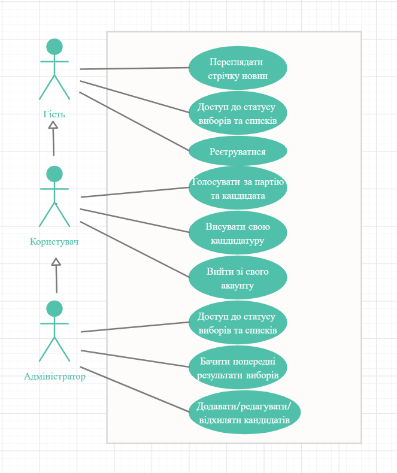

Предметна область:
Моделювання процесу проведення електронних виборів до ВР та місцевих рад
(Е-вибори)
Метою даної роботи є створення системи, яка дозволяє виборцям голосувати з будь-якого комп'ютера, підключеного до Інтернету, в будь-якій точці світу.
Функціональні вимоги до системи
Система має відповідати наступним функціональним вимогам:
Незареєстрований користувач:
незареєстрований користувач повинен мати можливість переглядати головну сторінку
незареєстрований користувач повинен мати можливість переглядати інформацію про статус виборів та списки кандидатів
незареєстрований користувач повинен мати можливість зареєструватися
Зареєстрований користувач:
зареєстрований користувач повинен мати усі можливості, що є у незареєстрованого користувача
зареєстрований користувач повинен мати можливість проголосувати за кандидата, партію
зареєстрований користувач повинен мати можливість заповнити форму для того, щоб висунути свою кандидатуру, та надіслати її адміністратору
зареєстрований користувач повинен мати можливість вийти зі свого акаунту
Адміністратор сайту:
адміністратор повинен мати усі можливості, що є у зареєстрованого користувача
адміністратор повинен мати можливість додавати кандидатів та партії
адміністратор повинен мати можливість приймати або відхиляти заявки кандидатів
адміністратор повинен мати можливість редагувати інформацію про кандидатів
адміністратор повинен мати можливість переглядати попередній результат виборів
Нефункціональні вимоги до системи
Система має відповідати наступним нефункціональним вимогам:
система повинна мати відкриту архітектуру
система повинна мати веб-інтерфейс
інтерфейс користувача має бути зручним та інтуїтивно-зрозумілим
система повинна бути крос-платформною
Сценарії використання:

Сутності:
Незареєстрований користувач
Зареєстрований користувач
Адміністратор
На головну